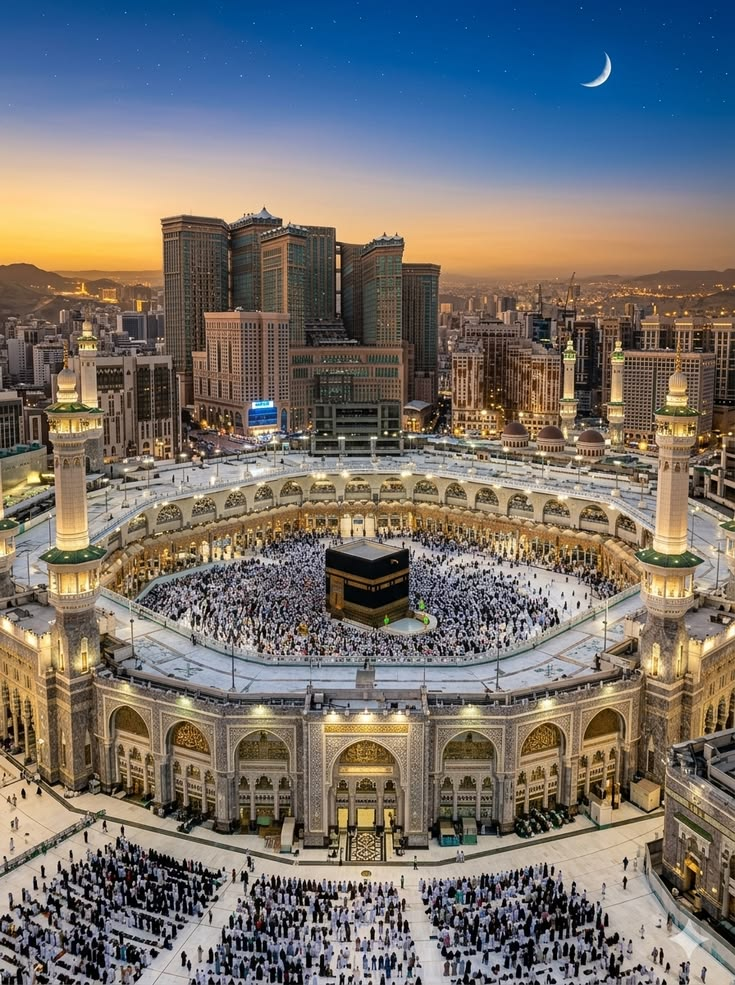
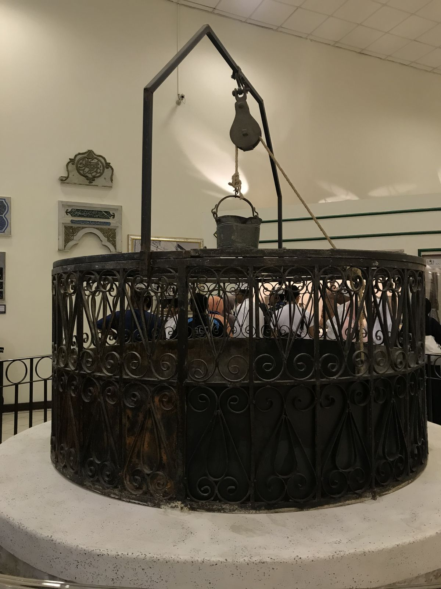
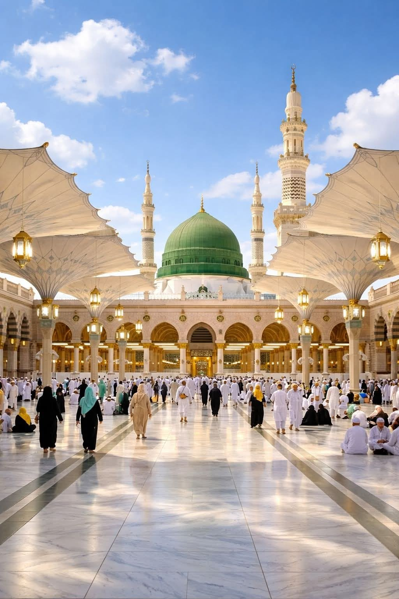
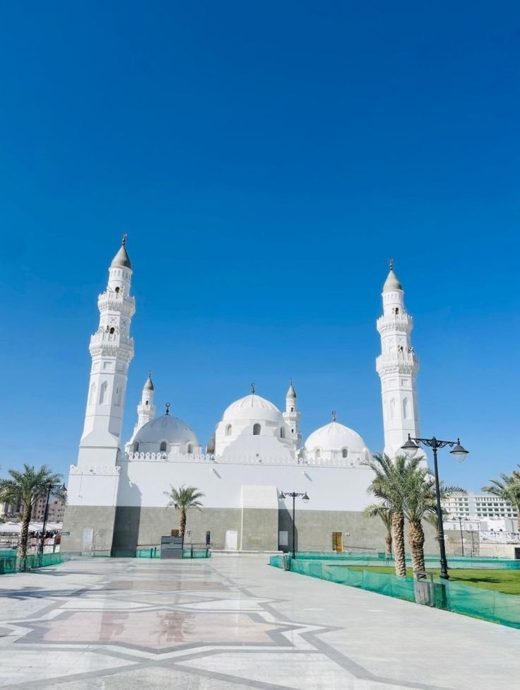
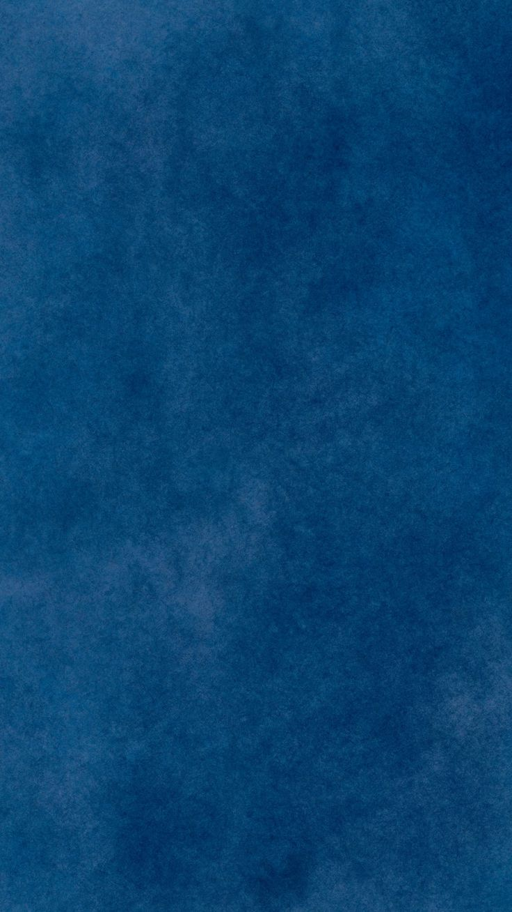

la-mecque-masjid-al-haram.jpgMasjid al-Haram
La Grande Mosquée de La Mecque, qui entoure la Kaaba — le lieu le plus sacré de l'Islam, point vers lequel se tournent les prières du monde entier.

ATT SUARL — Oumra
Chaque détail de ce voyage — vols, hôtels, transferts, guides — est pensé pour une seule chose : vous permettre de vivre votre Oumra dans les meilleures conditions de sérénité et de recueillement.
Comprendre le voyage
L'Oumra est le petit pèlerinage à La Mecque. Contrairement au Hajj, elle peut être accomplie à tout moment de l'année. C'est un acte de dévotion personnelle, sur les traces d'Ibrahim (AS) et de Hajar — un voyage vers l'essentiel.
Le déroulement
Nos guides religieux vous accompagnent à chaque étape, pour que vous puissiez vous concentrer uniquement sur votre recueillement.
L'état sacré dans lequel entre le pèlerin, marqué par une tenue simple (deux pièces de tissu blanc pour les hommes) et la formulation de l'intention (niyyah), au niveau du Miqat, point de passage désigné.
Sept circumambulations autour de la Kaaba, au cœur de la Masjid al-Haram — le moment le plus intense du rituel, vécu dans le recueillement collectif de pèlerins venus du monde entier.
Sept allers-retours entre les monts Safa et Marwa, en mémoire de la quête d'eau de Hajar pour son fils Ismaël — un rappel de persévérance et de confiance.
La coupe (ou le rasage complet pour les hommes) d'une mèche de cheveux, marquant l'accomplissement de l'Oumra et la sortie de l'état d'Ihram.
Les lieux saints
Deux villes, un même itinéraire, organisé pour que chaque lieu visité garde tout son sens.

la-mecque-masjid-al-haram.jpgLa Grande Mosquée de La Mecque, qui entoure la Kaaba — le lieu le plus sacré de l'Islam, point vers lequel se tournent les prières du monde entier.

la-mecque-zamzam.jpgUne source jaillie pour Hajar et Ismaël, dont l'eau est encore aujourd'hui bue par les pèlerins comme une bénédiction.

medine-masjid-an-nabawi.jpgLa Mosquée du Prophète à Médine, qui abrite la Rawdah — un espace considéré comme un jardin du Paradis — et le lieu de repos du Prophète Muhammad (PSL).

medine-quba.jpgLa toute première mosquée bâtie en Islam, à l'entrée de Médine — une visite empreinte de sérénité, souvent incluse dans notre programme.
Notre accompagnement
ATT SUARL prend en charge chaque étape de votre voyage, pour que rien ne détourne votre attention de l'essentiel.

oumra-att-groupe.jpg